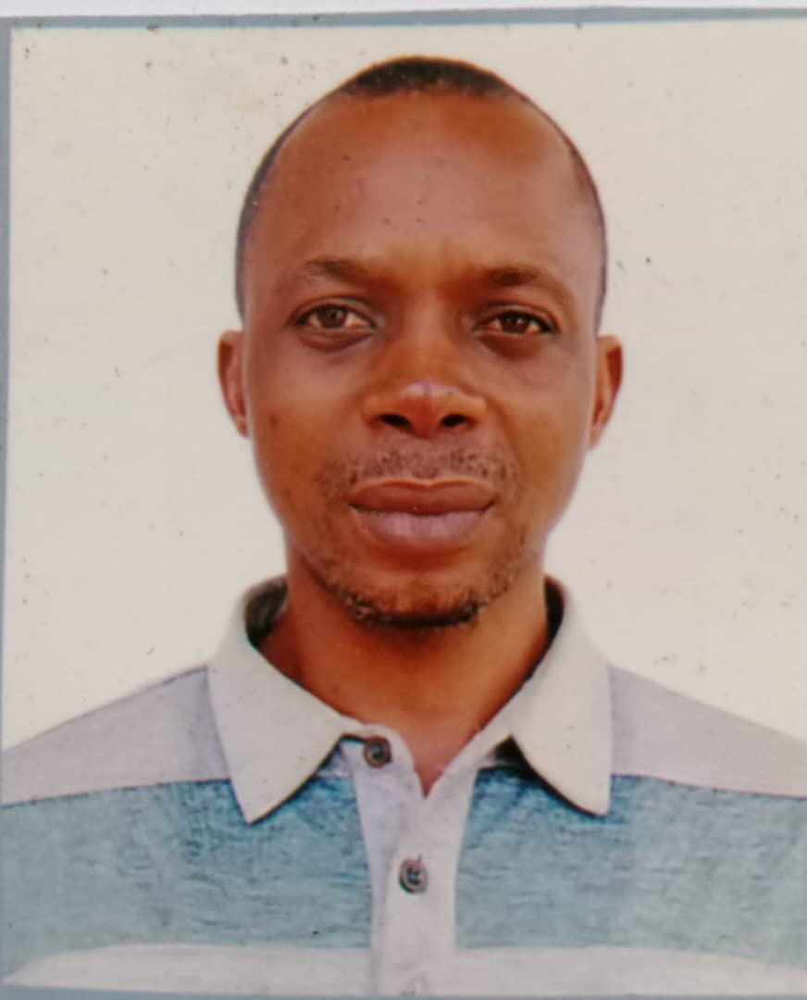

Lagos–California ACR129 Update: July 20, 2026
The Lagos–California ACR129 Sister-State Partnership continues to advance opportunities for Nigerian communities. Click to read our latest update.
Empowering Communities · Building Futures · Lagos State, Nigeria
Get Help Rural-Urban Foundation improves the quality of life of vulnerable and underserved communities through employment support, skills acquisition, and sustainable empowerment — one community at a time.
To improve the quality of life of vulnerable and underserved communities through employment support, skills acquisition, community development, environmental improvement, urban-rural integration, and sustainable empowerment initiatives in partnership with government, private organizations, and local communities.
Get Help Rural-Urban Foundation is a community development and empowerment foundation established to improve the quality of life of vulnerable and underserved people across Lagos State — and beyond.
Get Help Rural-Urban Foundation began in 2020 under the name LIGHTFORTHELESSPRIVILEGED — a grassroots effort to support the less privileged in underserved communities. Over the years, our work expanded in scope and ambition, leading us to rename the organisation to Get Help Rural-Urban Foundation, which better reflects our broader mission of rural-urban community development and empowerment.
We are currently in the process of formal CAC registration under our new name. Since our founding, we have delivered community support and outreach programmes across Cross River State and have extended our reach to Lagos State, where we are now actively building partnerships and establishing our presence.
To become a leading community development foundation in Lagos State, promoting economic opportunity, sustainable communities, and inclusive growth for rural and urban residents alike.
To improve the quality of life of vulnerable and underserved communities through employment support, skills acquisition, community development, environmental improvement, urban-rural integration, and sustainable empowerment initiatives.
We believe every person has the potential to improve their circumstances with the right support.
We operate with transparency, accountability, and honesty in everything we do.
We put communities at the centre — working with people, not just for them.
We serve everyone — youths, women, the elderly, and persons with special needs.
Our programmes are designed to address the most pressing needs of vulnerable and underserved communities across Lagos State — creating lasting, meaningful change from the ground up.
Vocational training, digital skills, and entrepreneurship programmes to equip youths and adults with practical tools for employment and self-reliance. Delivered through workshops, mentorship, and hands-on training sessions.
Support for community-led development projects — from infrastructure improvements to social cohesion initiatives. We work alongside community leaders, local authorities, and residents to drive change from within.
Scholarships, educational materials, mentoring, and back-to-school support for children and young people from disadvantaged backgrounds. We believe education is the foundation of lasting empowerment.
Community health awareness campaigns, medical outreach events, and support services targeting underserved areas. We promote preventive healthcare and connect communities with health resources.
Community clean-up drives, tree planting, renewable energy awareness, and environmental education. We champion sustainable communities where people and their environment can thrive together.
We are building a foundation of community-driven projects across Lagos State — tackling youth unemployment, environmental challenges, energy awareness, and enterprise development.
A structured vocational training and skills acquisition programme targeting unemployed youths and adults across Lagos State. Participants will gain practical skills in digital literacy, trades, and entrepreneurship — creating direct pathways to employment and self-reliance.
Organised community sanitation drives and beautification projects to improve the living environment of underserved areas. Activities include waste management, tree planting, drainage clearing, and public space improvement — in collaboration with local authorities and community leaders.
A community-level campaign to promote renewable energy awareness and practical knowledge of solar solutions. Workshops, demonstrations, and educational materials will help residents and community groups understand low-cost energy options and sustainability practices.
A programme connecting rural producers and entrepreneurs with urban markets, networks, and development resources. The project will support micro-businesses, cooperatives, and informal traders through training, linkages, and development support to reduce the rural-urban economic divide.
Pairing aspiring entrepreneurs and small business owners with experienced mentors for structured guidance, accountability, and business development support. The programme will cover business planning, financial management, marketing, and access to opportunities — helping participants build viable, sustainable businesses.
We are currently seeking recognition and partnership approval from the following Lagos State ministries. Formal partnerships will be confirmed upon approval.
Get Help Rural-Urban Foundation is guided by a founding team committed to community development, transparency, and lasting impact across Lagos State.
A reliable, energetic, and resourceful professional with over 19 years' administrative experience and 12 years as a Support Worker in a residential mental health home. An experienced social media content writer and community development advocate with a strong background in business development, counselling, and health & social care. Holds qualifications including a Counselling Skills Diploma (NCFE Level 3), Cyber Security Diploma, Level 3 NVQ Health and Social Care (City & Guilds), and a Certificate in Designing a Multidimensional Poverty Index (UNDP / University of Oxford).

A dedicated professional with a strong background in electronic engineering and renewable energy. Research Associate at the National Centre for Hydropower Research and Development, Nigeria, and a Fellow of i-Fair (Israel–Nigeria), reflecting his commitment to international collaboration. Holds a BSc in Electronic and Computer Technology and contributes his expertise to Bowen University, Iwo, Osun State. His skills span renewable energy technologies, electronic maintenance, and fabrication.
augustine.ogar@bowen.edu.ng[Bio — to be added]

[Note about this person — to be added]
As we begin our work in communities across Lagos State, this gallery will grow to document our projects, events, and the people we serve.
Event Photo
[To be added]
Outreach Photo
[To be added]
Training Photo
[To be added]
Event Photo
[To be added]
Outreach Photo
[To be added]
Training Photo
[To be added]
Event Video
[Paste YouTube link to add]
Event Video
[Paste YouTube link to add]
📌 Share your event photos and videos with me and I will add them to this gallery.
Make a real difference in your community. Join Get Help Rural-Urban Foundation as a volunteer and help us deliver employment support, skills training, and community development across Lagos State.
Your time and skills directly improve the lives of vulnerable people in your community.
Gain hands-on experience in community development, project management, and outreach.
Join a network of passionate people committed to sustainable community development.
Your contribution — no matter the size — helps us reach more communities, train more young people, and change more lives across Lagos State.
Funds vocational workshops, training materials, and facilitators for youth and adult programmes.
Supports clean-up drives, community improvement works, and environmental initiatives.
Provides scholarships, school supplies, and mentoring for children from disadvantaged homes.
Enables health awareness campaigns and medical outreach in underserved communities.
Interested in supporting us before our bank details go live? Reach out directly — we'll be happy to discuss how you can help.
We'd love to hear from you — whether you have questions, want to volunteer, explore a partnership, or simply learn more about our work in Lagos State.
Stay up to date with the latest news, announcements, and stories from Get Help Rural-Urban Foundation and the communities we serve.
We are excited to announce the launch of our official website — a major step in building our online presence and connecting with communities, volunteers, and supporters across Nigeria and beyond.
Get Help Rural-Urban Foundation — formerly known as LIGHTFORTHELESSPRIVILEGED — is currently undergoing formal CAC Incorporated Trustee registration. This marks a key milestone in our journey toward full legal recognition.
Since 2020, our foundation has delivered community support and outreach across Cross River State, and has now extended its reach to Lagos State — where we are actively building partnerships and establishing our presence.
To add a new blog post, share the title, date, category, and content with me and I'll publish it here.
The Lagos–California ACR129 Sister-State Partnership continues to advance opportunities for Nigerian communities. Click to read our latest update.
The most recent news from Get Help Rural-Urban Foundation.
Our formal CAC Incorporated Trustee registration is underway — a key milestone in our journey toward full legal recognition.
Since 2020, we have served communities in Cross River State and now extended our reach to Lagos State.
Official announcements from Get Help Rural-Urban Foundation.
We are excited to announce the launch of our official website — a major step in building our online presence and connecting with communities across Nigeria.